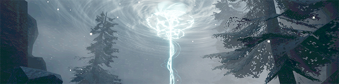

Game Portfolio
Interactive experiences and games I've worked on
Web Portfolio
Web development projects I've worked on
About
Who I Am
Hello! My name is Gage Magar. I am a student at Rochester Institute of Technology pursuing a
degree in Game Design and Development. Most of my work includes personal and academic video game
projects. I also have experience with web development from my time at a marketing agency,
freelance work, and web-relevant courses. My skills are applicable to various forms of
development and design.
I've had a passion for the technical and creative aspects of
development for as long as I can remember. I place great emphasis on work ethic and always
strive to create the best results I possibly can where time permits. I also enjoy working in a
team environment and collaborating on ideas!
Goals
I am currently seeking a career in either game design/development, software development, or web development. My diverse studies and experiences have given me interests that encompasses aspects of all these fields. I hope to use such an opportunity to gain experience in the industry, reinforce my skill set, and grow to be part of a team.
Contact
My contact information can be viewed via my resume.
Click the button below to open it as a
PDF.